Introdução à Ciência de Dados no R
Aula 12 - Estatística descritiva dos dados
Aula 12
Antonio Vinícius Barbosa
22-05-2023
Estatística descritiva dos dados
Estatística Descritiva
Objetivo
Objetivo
Nesta aula, veremos algumas características dos dados e aprenderemos como calcular e visualizar estatísticas básicas.
Estrutura da aula
- Análise univariada
- Média aritmética
- Média truncada
- Moda
- Medidas de centralidade
- Mediana, quartil, decil, percentil
- Medidas de dispersão
- Intervalo
- Desvios
- Variância amostral
- Desvio-padrão amostral
- Visualização dos dados
- Histogramas
- Densidades
- Boxplots
- Dados categóricos
- Gráfico de barras
- Gráfico de pontos
- A análise bivariada
- Plots
- Covariância
- Correlação
Análise univariada
Dados univariados
A análise univariada consiste em descrever a distribuição de uma única variável.
Uma variável representa uma medida ou característica de uma determinada unidade de observação.
-
Um dado univariado é um conjunto de medidas de uma variável para uma coleção de unidades, representado pelo vetor
\[ \begin{equation*} x = \begin{bmatrix} x_{1} \\ x_{2} \\ \vdots \\ x_{n} \\ \end{bmatrix} \end{equation*} \]
com \(x_{i}\) representando a medida para a unidade observada \(i = 1, 2, \ldots, n\).
Unidades de medida
As variáveis podem ser representadas de diferentes formas:
- Fatores: variáveis categóricas, como sexo, nível educacional, região.
- Caracteres: variáveis do tipo string, tais como id, endereço, nome do município.
- Dados discretos: variáveis representando valores contáveis, como o número de moradores em um domicílio ou o número de escolas de um município.
- Dados contínuos: informações contidas dentro de um intervalo contínuo, tais como gastos com saúde e renda per capita.
- Datas: variáveis com informações temporais, como dias da semana, meses e anos.
Dados univariados
Suponha um conjunto de dados de precipitação de alguns municípios da Paraíba:
A média aritmética
A média aritmética é definida como a soma dos elementos de uma variável dividida pelo número de observações:
\[ \bar{x} = \frac{\sum_{i=1}^{n}x_{i}}{n} = \frac{1}{n}\sum_{i=1}^{n}x_{i} \] com \(i =1, 2,\ldots, n\), sendo \(n\) o número de observações.
A média truncada
Em algumas situações, no entanto, algumas observações podem ter grande influência no cálculo da média. Uma possível solução é “aparar” (trim) os dois lados da amostra com valores mais extremos.
Moda
A moda é o valor que ocorre mais vezes, ou com maior frequência nos dados
Ainda, podem existir séries amodais, bimodias ou multimodais
O cálculo da mediana
A mediana (M) é o valor da observação que divide a amostra em duas parte iguais: quando 50% das observações estão do lado esquerdo e os outros 50% estão do lado direto.
Para encontrar a mediana, devemos:
- Ordenar os dados do menor para o maior
- Se tivermos \(n = 2k + 1\) observações (ímpar), então M é o \(k+1\)-ésimo elemento da ordenação.
- Se tivermos \(n = 2k\) observações (par), M é a média dos elementos \(k\) e \(k+1\)
A função median() já ordena a série de dados automaticamente.
Quartis
Da mesma forma, os quartis de um conjunto de dados são os valores que dividem a amostra em quarto partes iguais.

Quartis
Para o cálculo dos quartis, utilizaremos os dados sobre salários incluídos no pacote dados:
# Calculando os quartis
library(dados)
# Calculando os quartis
dados::salarios |>
filter(ano == 2016) |>
select(salario) |>
pull() |>
quantile(c(0.25, 0.50, 0.75))
## 25% 50% 75%
## 520000 1500000 6000000
# Calulando a mediana (quartil 0.50)
dados::salarios |>
filter(ano == 2016) |>
select(salario) |>
pull() |>
median()
## [1] 1500000Decis
Os decis são os valores que dividem a amostra em 10 partes iguais:
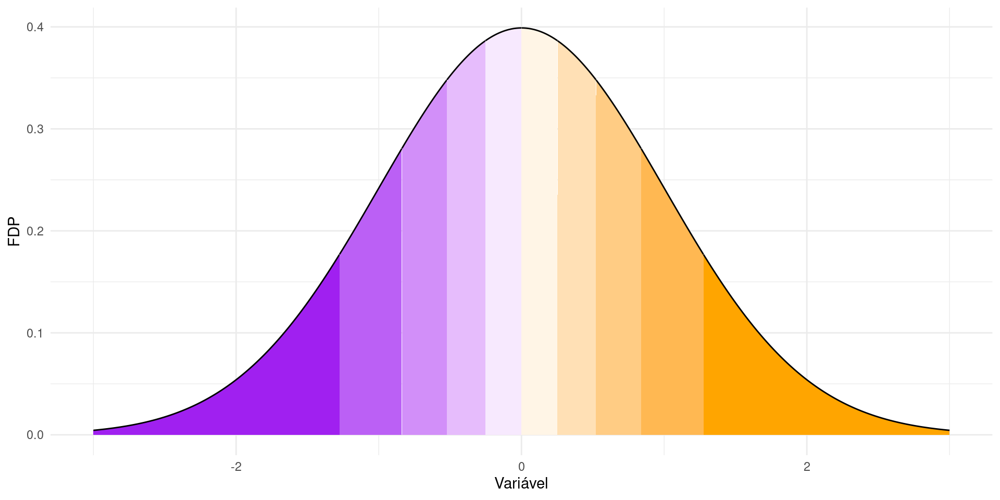Decis
Os decis são os valores que dividem a amostra em 10 partes iguais. Considere a distribuição a seguir:
Percentis
Os percentis, por sua vez, são os valores que dividem a amostra em 100 partes iguais.
Medidas de dispersão
Intervalo
A dispersão é uma importante característica de uma variável. A primeira medida de interesse é o intervalo no qual os dados estão inseridos:
Desvios da média
O desvio de uma observação \(i\) em relação à média é dado por
\[ d_{i} = x_{i} - \bar{x} \]
O cálculo dos desvios implicam em “centrar” os dados em relação à média. Neste caso, nos cinco primeiros municípios choveu uma quantidade maior do que a média, enquanto que nos demais choveu menos em relação à média .
Desvios da média
Uma candidata a medida de dispersão seria a soma dos desvios, dada por
\[ \delta = \sum_{i = 1}^{n}(x_{i} - \bar{x}) \]
No entanto, ao somar valores positivos com valores negativos, o resultado é aproximadamente igual a zero. Portanto utilizamos a soma dos desvios ao quadrado:
Desvios da média
Podemos utilizar, portanto, a soma dos desvios ao quadrado
\[ \Delta = \sum_{i = 1}^{n}(x_{i} - \bar{x})^{2} \]
Agora, basta encontrar uma medida representativa (média) dos desvios. Buscamos, portanto, a variância dos dados.
Variância amostral
Para obter uma boa medida de dispersão dos dados, calculamos a variância amostral, definida como o quadrado dos desvios em relação à média amostral, dividido por \(n -1\).
\[ \text{Variância amostral} = s^{2} = \frac{1}{(n-1)}\sum_{i}^{n}(x_{i} - \bar{x})^2 \]
Valores distantes do centro (média) têm maior desvio e, quando elevados ao quadrado, ficam cada vez maiores. Portanto, quando mais disperso for um conjunto de dados, maior será a variância.
Variância amostral
Para obter uma boa medida de dispersão dos dados, utilizamos a média do quadrado dos desvios em relação à média.
Desvio-padrão amostral
Como os dados de precipitação estão em \(mm\), a variância é medida em \((mm)^2\), o que dificulta a sua interpretação. Para evitar este problema, basta calcular a raiz quadrada para obter o desvio-padrão da amostra.
\[ \text{Desvio-padrão} = \sqrt{s^{2}} = s = \sqrt{\frac{1}{(N-1)}\sum_{i}^{n}(x_{i} - \bar{x})^2} \] . . .
Histogramas
Um histograma consiste numa representação gráfica, em barras (retângulos), de um conjunto de dados previamente tabulados e divididos em classes uniformes. Os dados são divididos em intervalos regulares, chamados de bins.
Histogramas
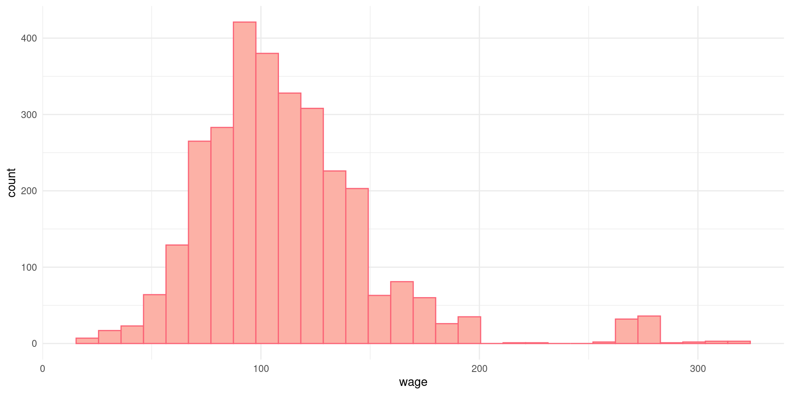Histogramas
Para mudar o número de bins, ajustamos o argumento binwidth da função geom_histogram()
Histogramas
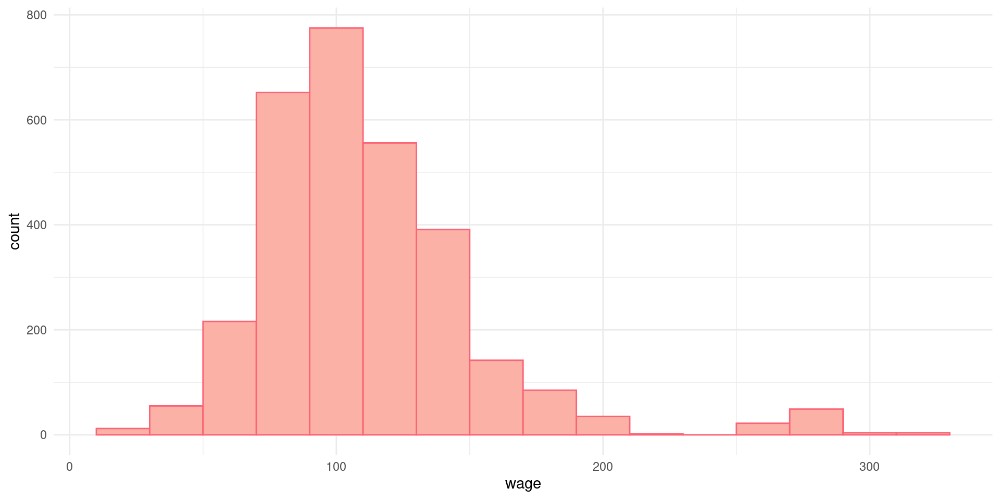Densidades
Uma forma alternativa de visualizar um histograma é estimar a distribuição teórica (kernel) dos dados. Agora, a pergunta é: se pergarmos um valor aleatório da variável, qual a probabilidade de estar contida em um dado bin?
Densidades
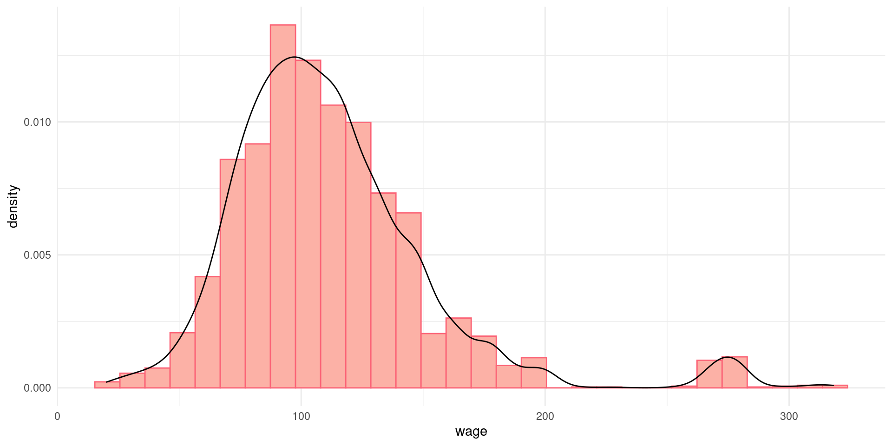Estatísticas básicas
Vimos que a função summary() mostra estatísticas básicas de uma variável.
As cinco estatísticas (mínimo, máximo, primeiro quartil, mediana e terceiro quartil) dão uma boa ideia das características do conjunto de dados.
Boxplots
Um dispositivo gráfico útil para visualizar tais estatísticas é o boxplot:
- A “caixa” é desenhada de acordo com os dados compreendidos entre o primeiro e terceiro quartis, correspondendo à 50% da amostra.
- A mediana é indica como a reta que divide a caixa em duas partes: 25% dos dados do lado direito e 25% dos dados do lado esquerdo.
- Os dados abaixo do quartil 1 e acima do quartil 3 são indicados por retas (whiskers), representando os valores máximos e mínimos.

Boxplots
Para plotar boxplots, fazemos:
Boxplots
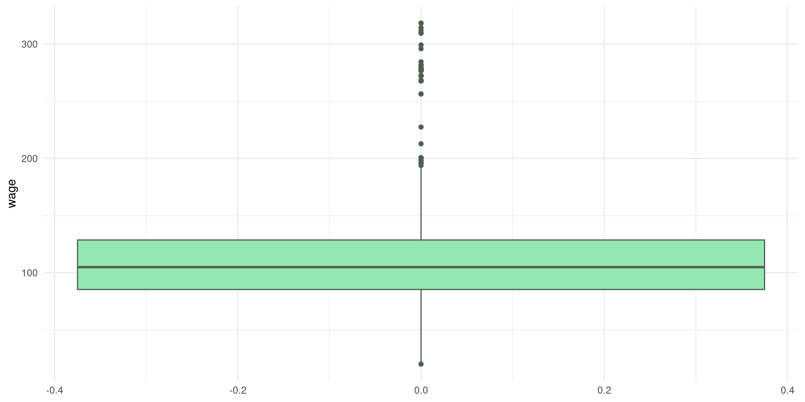Dados categóricos
Obter estatística descritiva de dados categóricos é uma tarefa simples. O primeiro passo consiste em tabular os dados.
Gráfico de Barras
Para visualizar a tabulação em um gráfico, utilizamos a função geom_bar()
Gráfico de Barras
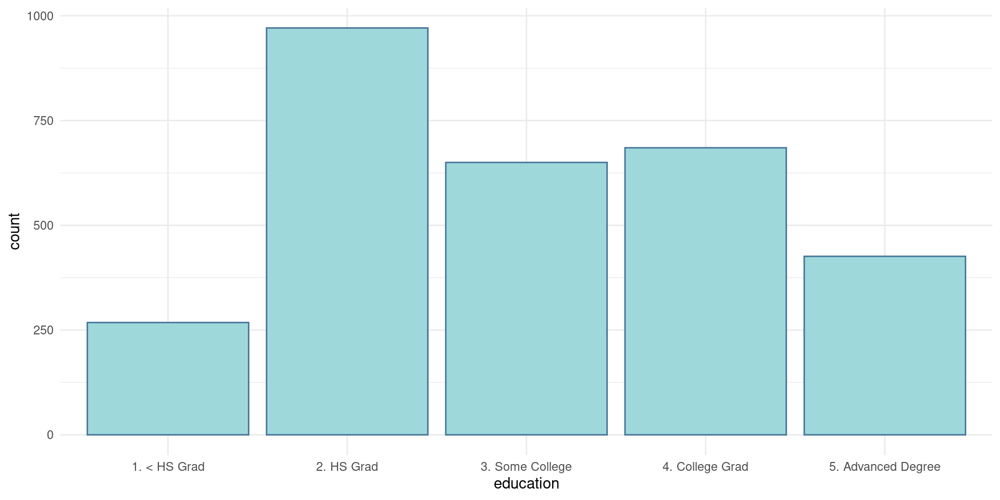Lollipop charts
Uma alternativa para o gráfico de barras são os gráficos do tipo lollipop:
Lollipop charts
Uma alternativa para o gráfico de barras são os gráficos do tipo lollipop:
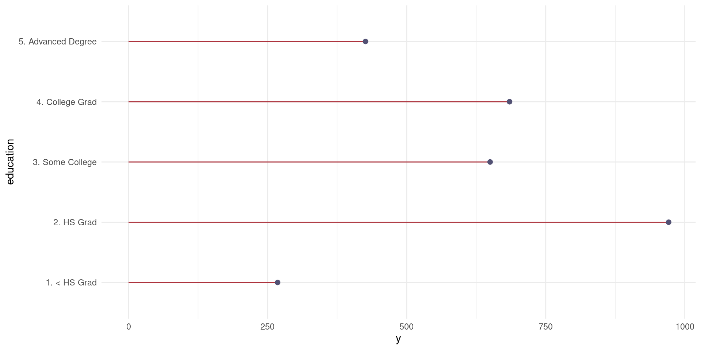Análise bivariada
Análise bivariada
Podemos estender a nossa análise para estatísticas envolvendo outras variáveis ou, mais especificamente, entender a relação existente entre duas variáveis.

Gráfico de dispersão
Para investigar a relação entre duas variáveis, pode visulizar através de uma gráfico de dispersão (ou de pontos)
Gráfico de dispersão
Para investigar a relação entre duas variáveis, pode visulizar através de uma gráfico de dispersão (ou de pontos)
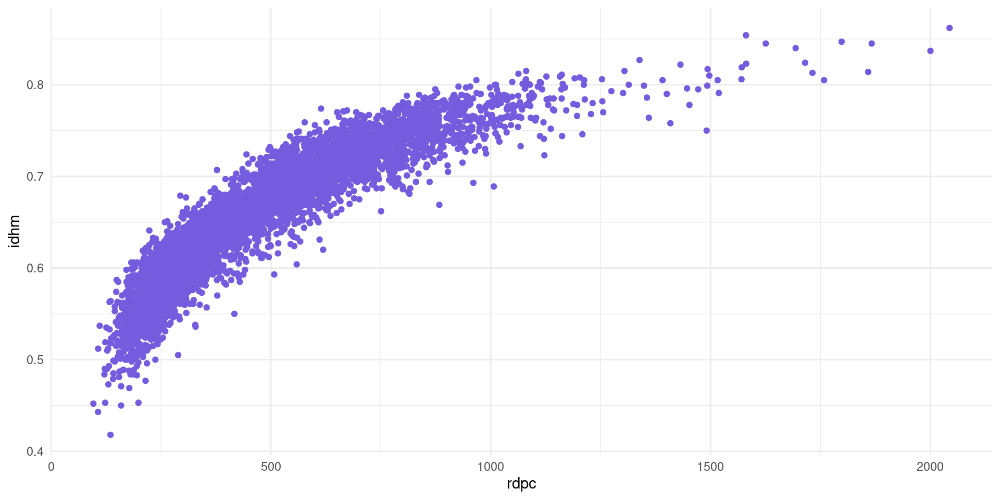Covariância
Considere, ainda, a relação entre Gini e expectativa de vida
# Carregar pacote
library(abjData)
library(patchwork)
# Graficos de dispersao
p1 <- pnud_min |>
filter(ano == 2010) |>
ggplot() +
geom_point(
aes(x = rdpc, y = idhm), col = "#735cdd"
) +
theme_minimal()
p2 <- pnud_min |>
filter(ano == 2010) |>
ggplot() +
geom_point(
aes(x = gini, y = espvida), col = "#7E007B"
) +
theme_minimal()
# Juntar plots
p1 + p2Covariância
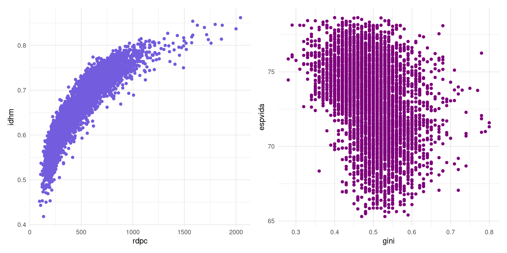Covariância
Enquanto na primeira relação as variáveis parecem caminhar juntas, nenhum padrão é observado no segundo caso.
Definição
A covariância mede a relação linear entre duas variáveis x e y
\[ cov(x, y) = \frac{1}{N-1}\sum_{i=1}^{N}(x_{i} - \bar{x})(y_{i} - \bar{y}) \]
A covariância entre duas variáveis aleatórias reais \(x\) e \(y\), é definida como a medida de como duas variáveis variam conjuntamente.
Covariância
Geometricamente, temos:
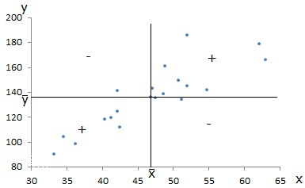Uma associação linear entre \(x\) e \(y\) no mesmo sentido faz com que predominem as parcelas positivas no cálculo da covariância.
Covariância
Geometricamente, temos:
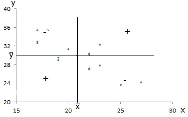Uma associação linear entre \(x\) e \(y\) em sentido contrário faz com que predominem as parcelas negativas no cálculo da covariância.
Covariância
Geometricamente, temos:
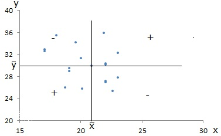Se não for verificado uma associação linear entre as variáveis, então nem predominam as parcelas positivas, nem as negativas, obtendo-se para a covariância nula.
Covariância
Para o cálculo da covariância, fazemos:
Coeficiente de correlação
Para saber o quão forte um variável está correlacionada com a outra, utilizamos o coeficiente de correlação.
Definição
O coeficiente de correlação é uma medida que mostra o quanto uma variável \(x\) está relacionada linearmente com outra variável \(y\).
\[ cor(x, y) = \frac{1}{N-1}\sum_{i=1}^{N}\left(\frac{x_{i} - \bar{x}}{s_{x}}\right)\left(\frac{y_{i} - \bar{y}}{s_{y}}\right) = \frac{cov(x, y)}{s_{x}s_{y}} \in [-1, +1] \]
- Valores mais próximos de -1 indicam um forte relação negativa entre as variáveis (inclinação negativa)
- Valores mais próximos de +1 indicam um forte relação positiva (inclinação positiva).
Correlação
Para calcular o coeficiente de correlação, fazemos:
- No primeiro caso, as variáveis têm correlação positiva forte.
- No segundo caso, as variáveis têm correlação negativa fraca.
Matriz de Correlação
Podemos fazer uma análise de correlação para múltiplas variáveis. O resultado é uma matriz com os coeficientes de correlação para cada par de variáveis.
# Dados
matriz <- pnud_min |>
filter(
ano == 2010
) |>
select(
idhm_e:gini
)
# Matriz de correlacao (com 4 casas decimais)
round(cor(matriz), 4)
## idhm_e idhm_l idhm_r espvida rdpc gini
## idhm_e 1.0000 0.7045 0.8199 0.7045 0.7917 -0.4233
## idhm_l 0.7045 1.0000 0.8339 1.0000 0.7843 -0.3796
## idhm_r 0.8199 0.8339 1.0000 0.8338 0.9617 -0.3580
## espvida 0.7045 1.0000 0.8338 1.0000 0.7842 -0.3796
## rdpc 0.7917 0.7843 0.9617 0.7842 1.0000 -0.2736
## gini -0.4233 -0.3796 -0.3580 -0.3796 -0.2736 1.0000Visualizando a Matriz de Correlação
Alguns dispositivos gráficos facilitam a visualização de uma matrix de correlação. O primeiro deles é obtido através da função corrplot()
Visualizando a Matriz de Correlação
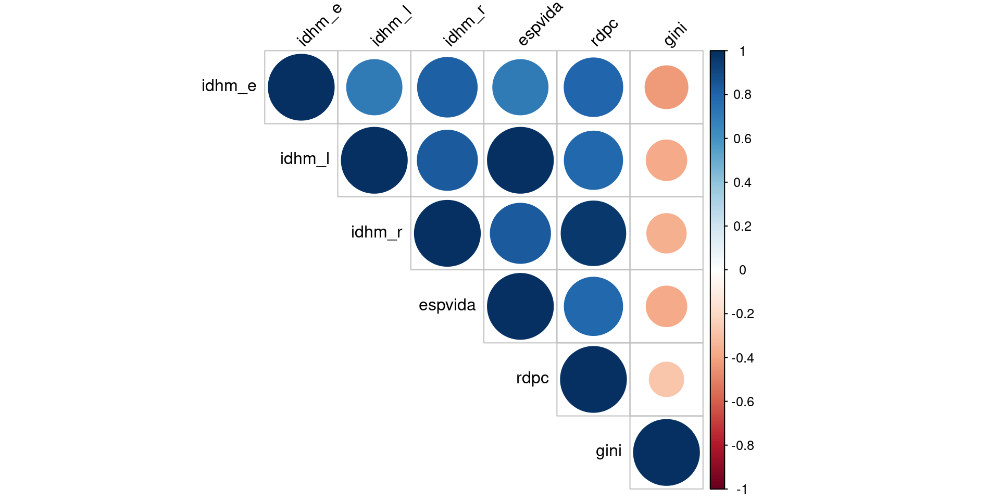Mapas de calor (heatmaps)
A outra maneira é utilizar mapas de calor, através da função heatmap()
Mapas de calor (heatmaps)
A outra maneira é utilizar mapas de calor, através da função heatmap()
Regressão linear simples
A regressão linear simples é um método estatístico que podemos usar para encontrar a equação da linha que melhor se “ajusta” a um conjunto de dados. O objetivo é entender a relação exata entre duas variáveis.
Para entender o conceito, suponha que estejamos interessados em saber a relação exata entre renda do domicílio (variável independente ou explicativa) e despesa com alimentação das famílias (variável dependente ou explicada)
Regressão linear simples
- Supondo uma relação linear entre as duas variáves:
\[ Consumo_{i} = \beta_{0} + \beta_{1}Renda_{i} + \epsilon_{i} \]
- \(Consumo_{i}\) é a variável dependente ou explicada
- \(Renda_{i}\) é a variável independente ou explicativa
- \(\beta_{0}\) é o parâmetro de intercepto
- \(\beta_{1}\) é o parâmetro de inclinação
- \(\epsilon_{i}\) é o termo de erro do modelo
Reta de regressão
Reta de regressão
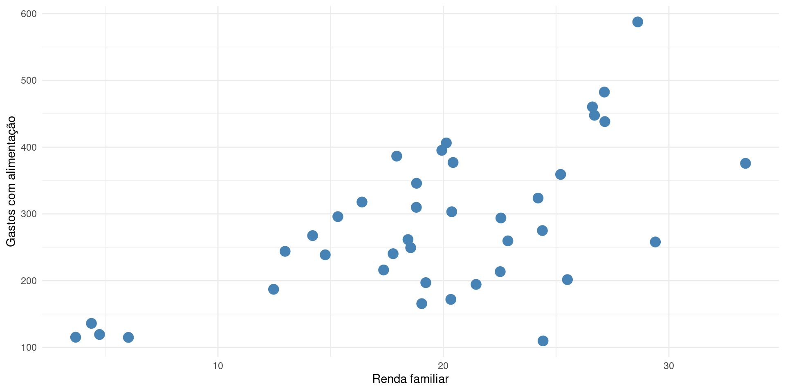Reta de regressão
Para adicionar a reta de regressão, fazemos:
# Carregar pacote
library(PoEdata)
data("food")
# Grafico de dispersao
food |>
ggplot() +
geom_point(
aes(x = income, y = food_exp),
size = 4, color = "#4682b4"
) +
geom_smooth(
aes(x = income, y = food_exp),
color = "red",
method = lm, se = FALSE, fullrange = TRUE
) +
xlab("Renda familiar") +
ylab("Gastos com alimentação") +
theme_minimal()Reta de regressão

Como a reta de regressão é ajustada?
- Ao estimar os parâmetros correspondentes aos verdadeiros parâmetros populacionais, obtemos:
\[ \widehat{Consumo}_{i} = \hat{\beta}_{0} + \hat{\beta}_{1}Renda_{i} \] com \(\hat{\beta}_{0}\) e \(\hat{\beta}_{1}\) os estimadores dos parâmetros.
- A ideia do método mínimos quadrados ordinários (MQO) consiste em encontrar os valores de \(\hat{\beta}_0\) e \(\hat{\beta}_1\) que minimizem os resíduos do nosso modelo.
\[ \hat{\epsilon}_{i} = Y_{i} - \hat{Y}_{i} \]
Como a reta de regressão é ajustada?
O objetivo do método é minimizar a soma do quadrado dos resíduos (SQR), definido por
\[ \min_{\{\hat{\beta}_0,\hat{\beta}_1\}} SQR = \sum (Y_{i} - \hat{Y}_{i})^{2} \]
\[ \min_{\{\hat{\beta}_0,\hat{\beta}_1\}} SQR = \sum (Y_{i} - \hat{\beta}_0 - \hat{\beta}_1 X_{i})^{2} \]
Com um pouco de matemática, podemos obter:
\[ \hat{\beta}_0 = \bar{Y} - \hat{\beta}_1\bar{X} \] \[ \hat{\beta}_1 = \frac{Cov(X_{i}, Y_{i})}{Var(X_{i})} \]
Como a reta de regressão é ajustada?
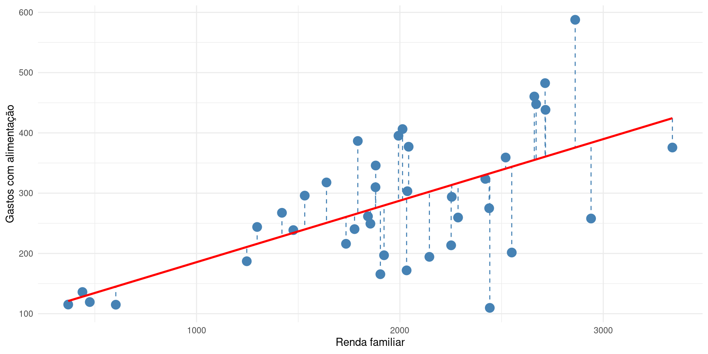Estimando o modelo
Estimamos um modelo de regressão linear através da função lm()
# Estimacao do modelo linear
fit_consumo <- lm(food_exp ~ income, data = food)
summary(fit_consumo)
##
## Call:
## lm(formula = food_exp ~ income, data = food)
##
## Residuals:
## Min 1Q Median 3Q Max
## -223.025 -50.816 -6.324 67.879 212.044
##
## Coefficients:
## Estimate Std. Error t value Pr(>|t|)
## (Intercept) 83.41600 43.41016 1.922 0.0622 .
## income 0.10210 0.02093 4.877 1.95e-05 ***
## ---
## Signif. codes: 0 '***' 0.001 '**' 0.01 '*' 0.05 '.' 0.1 ' ' 1
##
## Residual standard error: 89.52 on 38 degrees of freedom
## Multiple R-squared: 0.385, Adjusted R-squared: 0.3688
## F-statistic: 23.79 on 1 and 38 DF, p-value: 1.946e-05Estimando o modelo
- O modelo estimado é:
\[ \widehat{Consumo}_{i} = 83.416 + 0.1021*Renda_{i} \]
Isso significa que para cada $1 de aumento na renda, o consumo com alimentação aumenta em, aproximadamente, $0.10 (dado pelo estimador \(\hat{\beta}_{1}\))
Além disso, o nível de gasto autônomo (que independe da renda) é igual a R$83.41)
ICDR